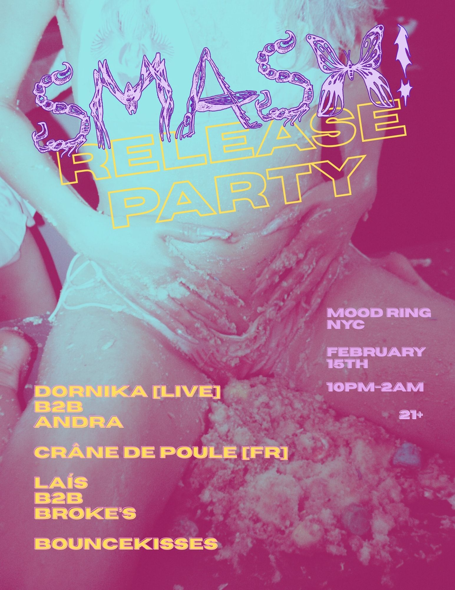

Ric & Thadeus / MCYL
Music and collaborator research, artist outreach, metadata, marketing support, and delivery to streaming platforms for independent hip-hop artists.
A&R / 01Selected work / 05
Artist research, release support, management, booking, and label leadership.
Music and collaborator research, artist outreach, metadata, marketing support, and delivery to streaming platforms for independent hip-hop artists.
A&R / 01I support Dornika’s management and booking, from venue outreach and artist communication to live-event production. I helped plan promotion for the song “SMASH!”, including its February 15 release party at Mood Ring NYC.

I managed the engineering, A&R, and marketing teams that helped bring these projects to release through Second District Records. The label worked with artists through non-exclusive student-label agreements, so current streaming label metadata may differ from the original release partnership.
Single
Single